There are many different types of watch brands. I have chosen some that of the most prevelant brands and brands that I enjoy. Some of these brands are very expensive, while others are very affordable.
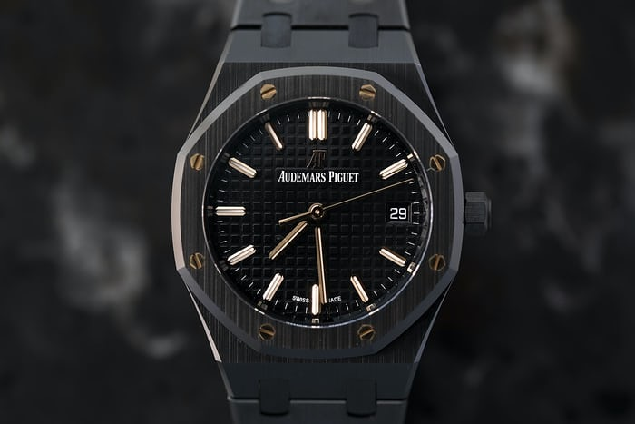
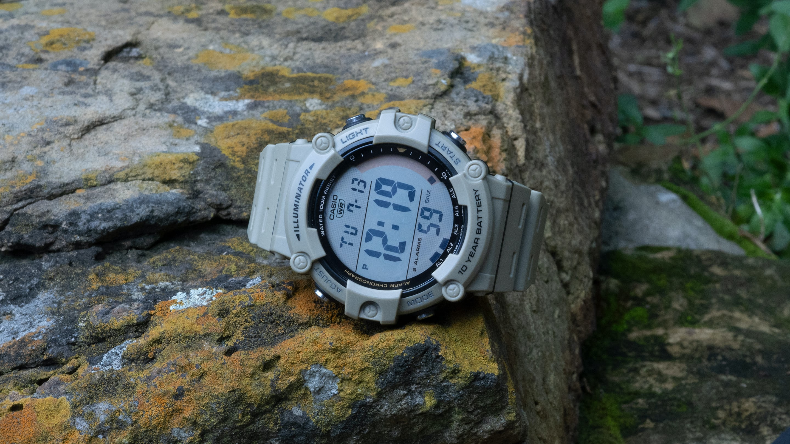
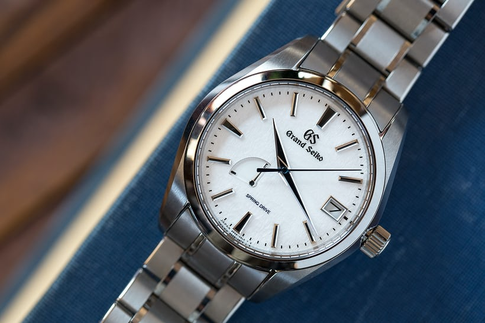
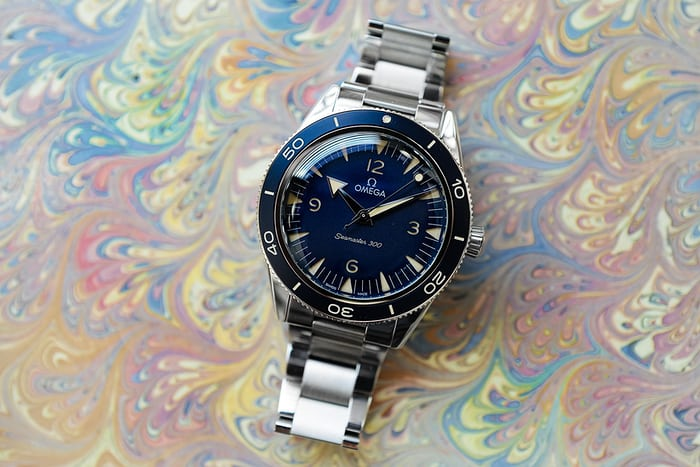
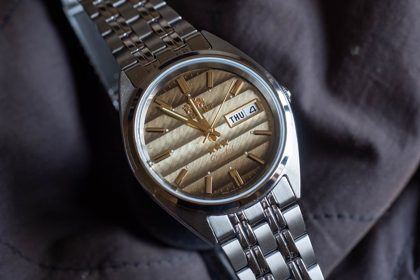
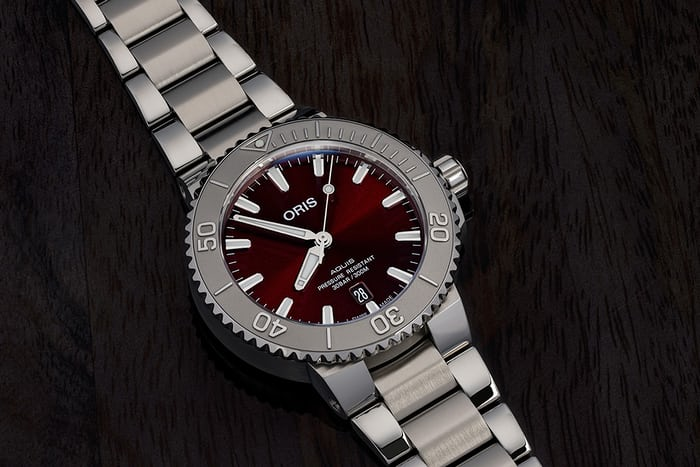
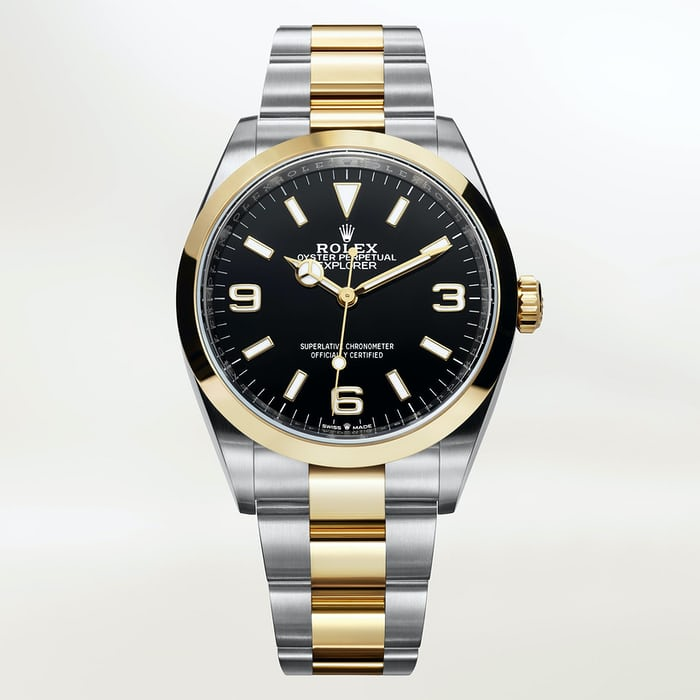
 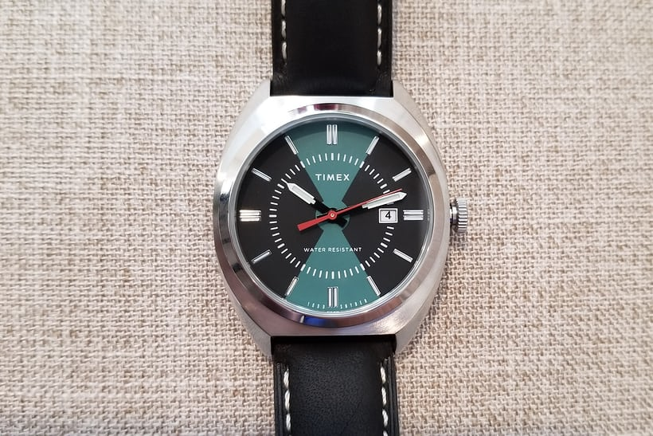
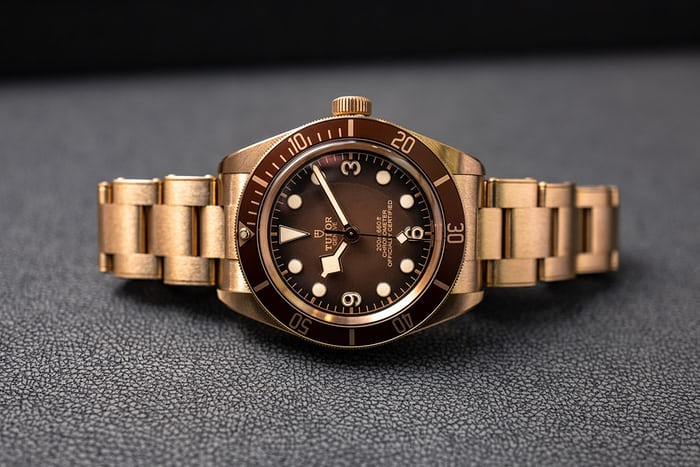
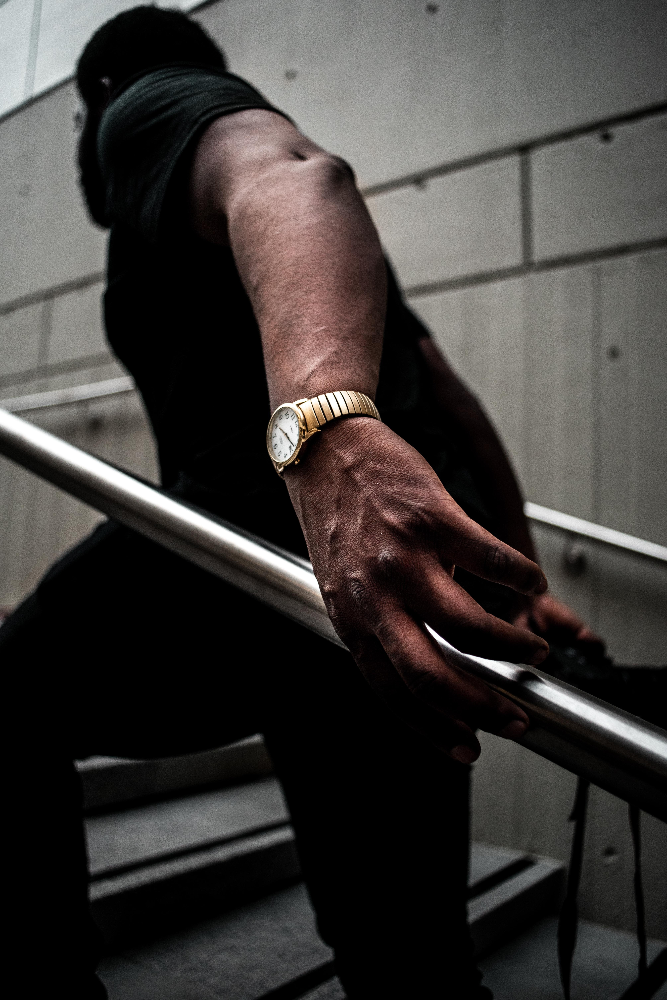
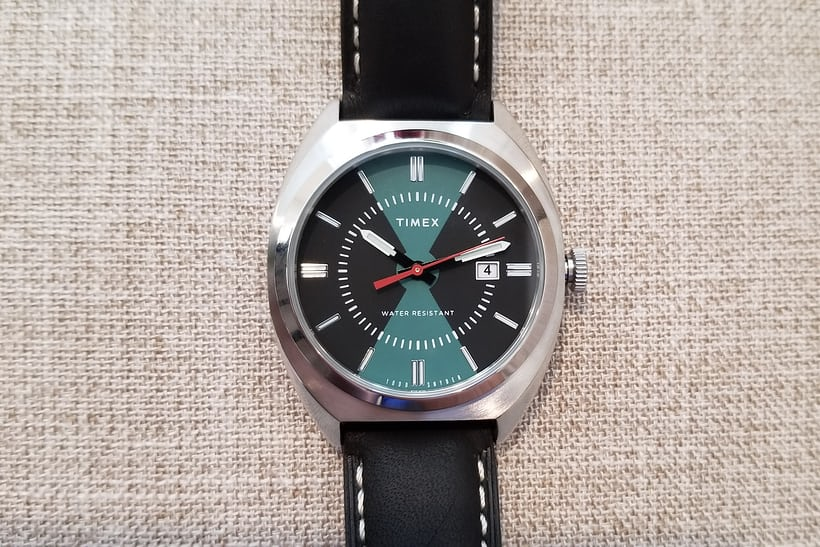
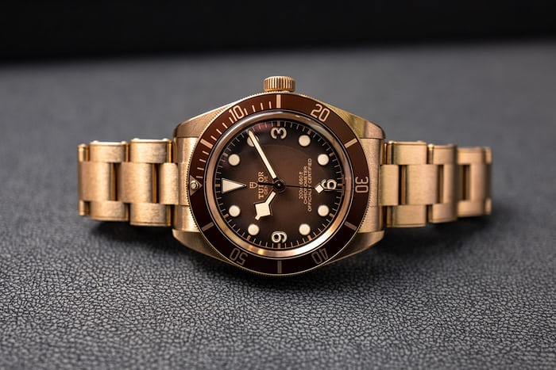
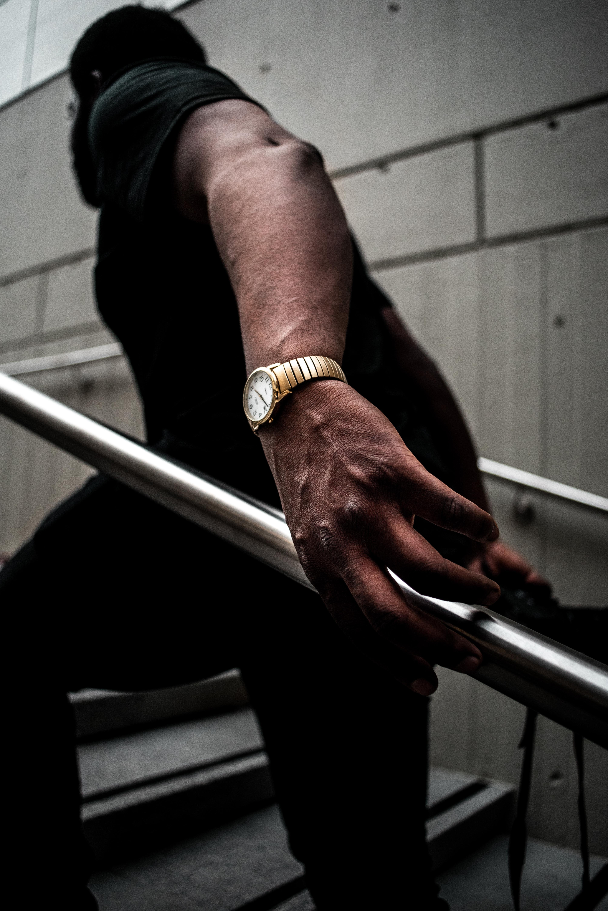
{kind=link} 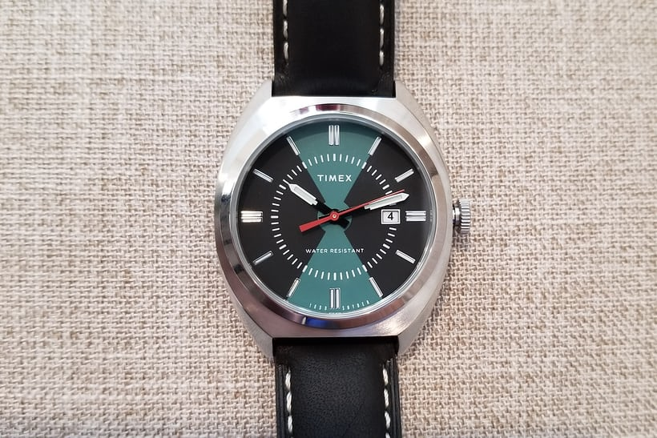
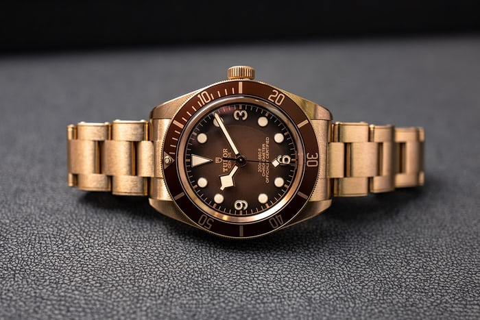
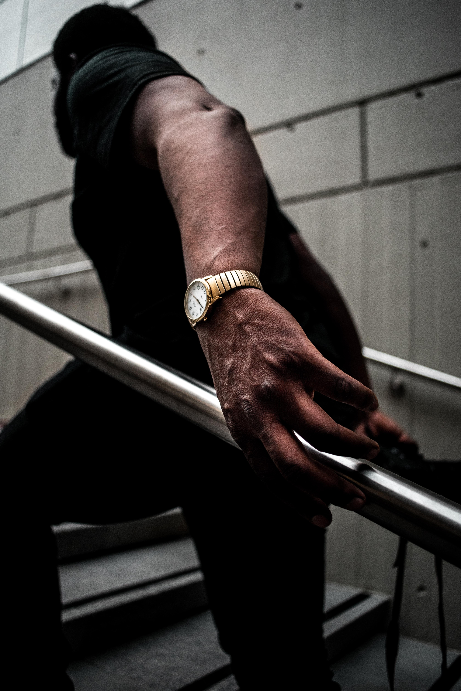
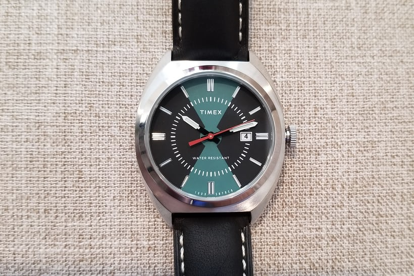
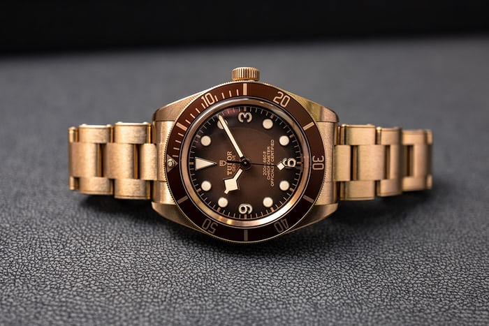
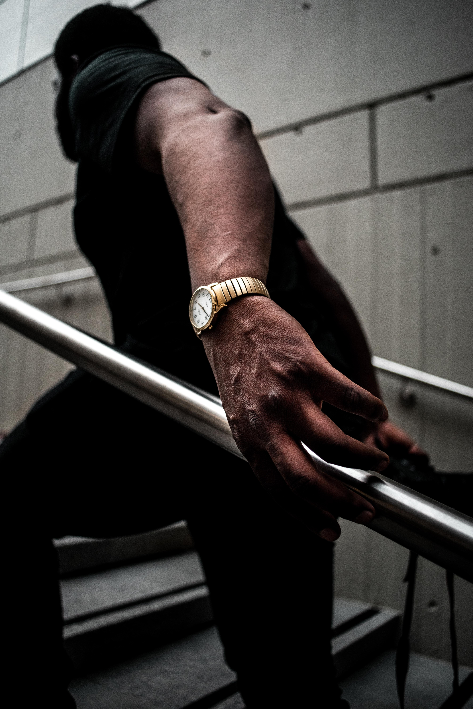
Some of the images pictured above include Audemars Piguet (A.P for short), Casio, Grand Seike and Seiko, Omega, Orient, Oris, Rolex and Tudor. Seiko and Grand Seiko are made by the same organization. Rolxe and Tudor watches are also made by the same organization.
Expensive Brands
- AP (Audemars Piguet)
- Can cost $100,000 +
- Grand Seiko
- Can cost $5000 +
- Omega
- Can cost $4000
- Rolex
- Can cost $10,000+
- Tudor
- Can cost $4000+
- Oris
- Can cost $3000+
Affordable Brands
- Casio
- Can be less than $100
- Orient
- Can be less than $100
- Timex
- Can be less than $100
Regardless of the price of the watch, they all do the same thing: tell time. Contrarty to what some may think, it is often the case that some of the least expensive watches are better at telling the time accurately than the more expenstive watches are.